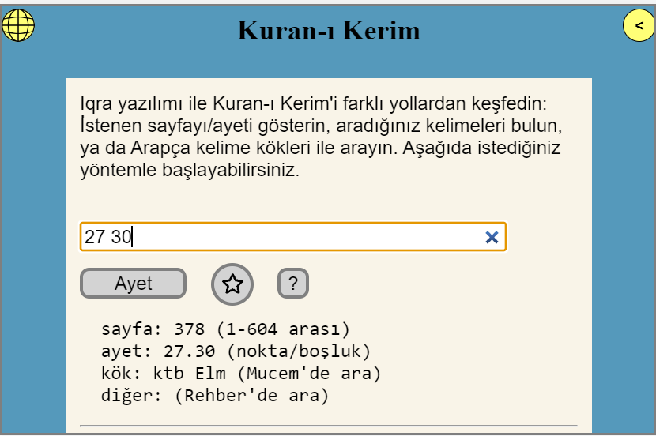
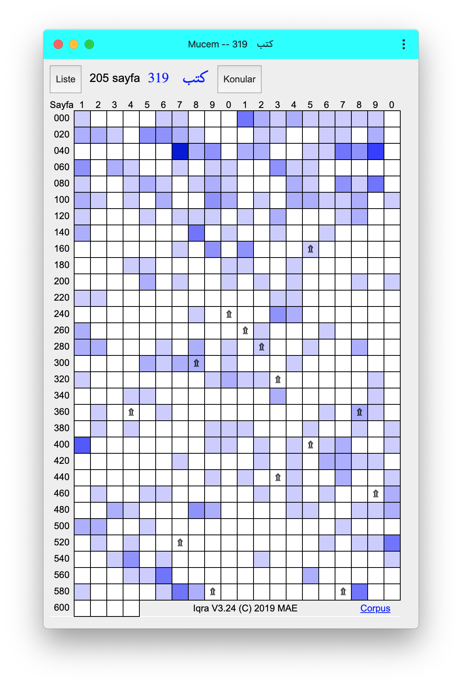

اقرأ هو واحد من مئات البرامج المصممة لقراءة كتابنا الكريم، القرآن. الميزات الأساسية التي تميزه عن البرامج الأخرى هي: إظهار جذر الكلمة على نص القرآن، وعرض جميع الصفحات التي تظهر فيها كلمة معينة في القرآن الكريم على شاشة واحدة، وقدرته على العمل بدون اتصال بالإنترنت.
تظهر صفحة البداية على شاشة الهاتف عند إمساكه بشكل أفقي كما يلي:

أيقونة الكرة الأرضية الصفراء تغير اللغة، والسهم الأصفر ينتقل إلى لوحة المصحف
عرض في المصحف: أظهر المكان المحدد برقم الصفحة أو الآية،
أو أظهر آخر صفحة معلمة بأيقونة النجمة
بحث في المعجم: ابحث عن الكلمات المشتقة من الجذر العربي المعطى
بحث في الدليل: ابحث عن كلمة في النص القرآني بالعربية أو في الترجمة
تُستخدم الميزات المتقدمة للبرنامج عبر الأزرار الأخرى
عند فتح المصحف، إذا كانت الشاشة واسعة بما يكفي، تظهر صفحة القرآن والترجمة معًا.
إذا لم تتسعا معًا، تظهر واحدة فقط (انظر: لوحات)
أثناء فتح المصحف، يمكن الانتقال إلى الصفحة التالية أو السابقة، أو إعطاء رقم سورة أو جزء أو آية أو صفحة أخرى.
تُدار جميع عمليات البحث عن طريق إدخال المعلومات في المربع الوحيد في هذا الحوار المشابه لصفحة البداية. بالنظر إلى المعلومات المدخلة، يقرر البرنامج بنفسه نوع البحث أو التنقل المطلوب. في هذا الحوار أيضًا، يمكن البحث عن الكلمات المنطوقة في الميكروفون. البحث الصوتي متاح للنص العربي فقط.
يمكن تحديد أرقام الصفحات أو الآيات في رابط البداية:
#v=27:28 (الآية 28 من السورة 27 – الصورة الأولى بالأسفل)
في هذه الصورة، تظهر قائمة الصفحة، ومعلومات الكلمة المنقورة، وأيضًا العلامة المستخدمة لآيات السجدة في الآية 25.
معنى الأزرار الظاهرة في أعلى اليمين:
☆ إضافة/حذف/اختيار علامة مرجعية
T إظهار/إخفاء/اختيار الترجمة
AA حجم الخط كبير/عادي (لا يظهر في الشاشات الضيقة)
☰ قائمة الصفحة: مساعدة، مشاركة، مصادر خارجية، إصدار...
> الانتقال إلى اللوحة الأخرى (الزر الوردي السهم الأصفر)
يمكن العثور على جذر ومعنى الكلمات العربية بالنقر على الكلمة بالماوس في الكمبيوتر، أو باللمس في الموبايل. تظهر الآيات والكلمات الموجودة في لوحة البحث (المعجم أو الدليل) ملونة في هذه اللوحة. في الشاشات الضيقة، لا تتسع أعمدة الآيات والترجمة معًا، وللتبديل بين الآيات والترجمة يلزم استخدام قائمة T (أو تمرير الشاشة). نظرًا لأن الخطوط تتناسب مع عرض الشاشة، فإن إمساك الهاتف بشكل أفقي سيعطي عرضًا أفضل.
في هذه الصورة، تظهر قائمة السياق بعد تحديد كلمتين.
للوصول إلى قائمة السياق: إذا كان هناك ماوس، انقر بزر الماوس الأيمن، وإلا، اضغط مطولاً على الكلمة، أو المس بإصبعين. يتم نسخ النص المحدد إلى الحافظة أو إرساله إلى وحدات البحث.
2. طرق البحث
يدعم البرنامج ثلاثة أنواع من البحث:
بحث نصي عادي (بثلاث لغات) – الدليل
البحث بجذر الكلمة العربية – المعجم
البحث عن الآيات المشابهة للآية على أساس الكلمات
2.1 الدليل (ثلاث لغات)
تم تقديمه كمشروع تخرج من قبل عبد الرحمن رجب للبحث عن نص عادي في النص العربي أو الترجمة التركية-الإنجليزية (تاريخ الانتهاء: يونيو 2020)
في نافذة المصحف على اليمين، تم تحديد كلمة "عند الله" في الصفحة 47. يمكننا الانتقال بسهولة إلى نافذة الدليل من قائمة السياق. يمكن العودة إلى المصحف بالضغط على رقم الآية أو النص الملون الموجود، أو الانتقال إلى برنامج خارجي من القائمة.
لتغيير عرض اللوحة، قم بسحب النقطة التي يوجد بها السهم المزدوج
أضيفت ميزة البحث الصوتي بالعربية والتركية والإنجليزية (التفاصيل في صفحة الدليل)
2.2 المعجم (بالعربية فقط)
أما طريقة المعجم، فهي تعمل بناءً على جذر الكلمات العربية المحددة. تم تصميم هذه الطريقة لأولئك الذين يعرفون لغة القرآن أو يرغبون في تعلمها. كل من المربعات الـ 604 الظاهرة على الصفحة يمثل صفحة من القرآن. الجذر المطلوب غير موجود إطلاقاً في الصفحات البيضاء. لون كل مربع يتناسب مع عدد الكلمات الموجودة في الصفحة المعنية. التفاصيل في
الصفحة ذات الصلة

2.3 الآيات المتشابهة
تم تقديم بعض الأمثلة على تشابه الآيات في هذه الصفحة
. فهل من الممكن إيجاد مثل هذه التشابهات تلقائيًا؟
الجواب نعم، فمن الممكن العثور على الآيات التي تحتوي على أكثر من كلمة متشابهة باستخدام وحدة التشابه:
في الصفحة المثال، هناك ثلاث آيات أرقامها باللون الأزرق.
مثلاً، للآية 30 المعروضة، تم العثور على ثلاث آيات متشابهة. هذه الآية
تحتوي على البسملة، وهي بالطبع مطابقة للآية الأولى من الكتاب. نظرًا لأن وحدة التشابه، مثل المعجم، تعمل بجذور الكلمات العربية،
فهي تُستخدم فقط في النص العربي، ولا توجد وحدة تشابه للترجمات حتى الآن.
3. قدرات البرنامج
الميزات التي يتمتع بها كونه تطبيق ويب تقدمي (PWA):
عند فتحه من صفحة الويب، يتم تنزيل مكوناته تلقائيًا
لا يتطلب تحديثًا، يتم تنزيل الإصدارات الجديدة تلقائيًا
يمكن فتحه في نافذته الخاصة، مثل التطبيق
يمكن أن يعمل دون اتصال بالإنترنت (off-line)
متوافق مع جميع أحجام الشاشات من سطح المكتب إلى الهاتف
لنلخص قدرات البرنامج على الأمثلة التالية:
اللوحات – البحث، الترجمة، القرآن
الميزة الأكثر وضوحًا للبرنامج هي التصميم ثلاثي اللوحات:
لنعرض اللوحات الثلاث بثلاثة أحرف:
A: البحث، T: الترجمة (المعنى)، K: القرآن
عند النظر إلى لوحة البحث، تظهر إحدى الصفحات التالية فقط:
البداية، الدليل، المعجم، المواضيع، الملاحظات، العلامات المرجعية، الكتاب...
(صفحات الكتاب لا تعمل في وضع عدم الاتصال)
إذا كانت الشاشة واسعة بما يكفي، تظهر اللوحات الثلاث في نفس الوقت.
سيتسع جهاز الكمبيوتر المحمول للوحتين، والهاتف للوحة واحدة فقط.
في هذه الحالة، يتم استخدام الأزرار الوردية أو تمرير الشاشة (swipe) للانتقال بين اللوحات.
الانتقال بين المعجم والمصحف
المعجم: الجذر ktb (كاف-تاء-باء) المعروض، تظهر مشتقاته المختلفة 319 مرة، في 205 صفحة. في الصفحة 59 المحددة في الصورة، يظهر 6 مرات، وفي الصفحات ذات الألوان الأفتح، يظهر عدد أقل... يمكننا قراءة آيات موضوع البحث في صفحة المصحف بالنقر على المربع الأصفر. (لقراءة في مصادر خارجية، يوجد أيضًا قائمة سياق) يمكن الوصول إلى الصفحة المرجعية التي نستخدمها من رابط Corpus في الزاوية اليمنى السفلى.
المصحف: في الصفحة 59 المفتوحة، تم تمييز 6 كلمات مشتقة من جذر "ktb" باللون الأزرق. بعد تحديد كلمة في المصحف، يمكن الانتقال إلى طرق البحث في المعجم والدليل من قائمة السياق. سيتم إضافة البحث عن الآيات المتشابهة إلى قائمة الآية.
الانتقال بين المصحف والدليل
المصحف: في الصفحة 382 المفتوحة، تم تحديد الكلمات "متى هذا". يمكننا الانتقال بسهولة إلى نافذة الدليل من قائمة السياق.
الدليل: في الصورة، تظهر الآيات التي تحتوي على سلسلة الأحرف "متى هذا". يمكن العودة إلى المصحف بالضغط على رقم الآية أو النص الملون الموجود، أو الانتقال إلى برنامج خارجي من القائمة.
4. الأسئلة الشائعة
ما هي الحاجة التي أدت إلى هذا المشروع؟
أثناء تلاوة القرآن الكريم، نصادف آيات متشابهة.
لشرح آية بأخرى، يلزم الانتقال السريع بين الآيات المتشابهة
ورؤيتها جميعًا معًا.
ما هي الميزات التي تميز 'اقرأ' عن برامج القرآن الكريم الأخرى؟
* إظهار جذور الكلمات العربية
* العمل بشكل مستقل عن الإنترنت
* تنزيل الإصدارات الجديدة تلقائيًا
اخترنا مصحف المدينة لثلاثة أسباب:
* علامات التجويد تسهل القراءة
* الشكل الكتابي الدولي الأكثر شيوعًا
* مناسب لروايات القراءات المختلفة
5. مجالات الاستخدام
القراءة اليومية: أضع نجمة عند آخر مكان وصلت إليه، وفي اليوم التالي أتابع من الصفحة ذات النجمة
البحث: معنى الكلمات وجذورها، المعجم، الآيات المتشابهة
العثور على آية: بالكتابة من لوحة المفاتيح، أو بالبحث الصوتي
المواضيع: رؤية مجموعة مختارة من الآيات كلها معًا
الدروس: الوصول المباشر إلى الآيات من صفحات مكتوبة في مواضيع مختلفة
المصادر الخارجية: الميزات الناقصة مثل الترجمات الإضافية، والقراءة الصوتية، وفروق القراءات، والمخطوطات، تُستكمل بروابط إلى مواقع أخرى. إذا كان لدى الموقع المعني ميزة عرض صفحة المصحف، فسيتم عرضها في قائمة الصفحة.
في لقطة الشاشة، تظهر قائمتان معًا: قائمة السياق عند رقم الآية وقائمة الصفحة عند أيقونة القائمة.


 لتغيير عرض اللوحة، قم بسحب النقطة التي يوجد بها السهم المزدوج
لتغيير عرض اللوحة، قم بسحب النقطة التي يوجد بها السهم المزدوج